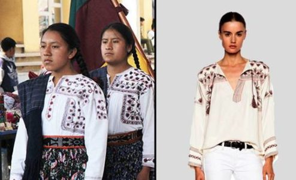

Nueva York, 10 de junio de 2024. La reconocida diseñadora estadounidense, Jennifer Blake, se encuentra en el centro de una tormenta mediática tras ser acusada de apropiación cultural en su última colección. La colección, que se presentó en la Semana de la Moda de Nueva York, incluye elementos claramente inspirados en las tradiciones indígenas de América del Norte, lo que ha provocado una fuerte reacción negativa.
La Colección Controvertida
Blake, conocida por sus diseños innovadores y su estilo vanguardista, presentó una serie de prendas que incorporan motivos y símbolos indígenas, como el uso de plumas, cuentas y patrones tradicionales. Aunque la colección fue inicialmente bien recibida por su creatividad, rápidamente surgieron críticas por la falta de respeto y la comercialización de elementos culturales sagrados.
Reacciones de la Comunidad Indígena
Líderes y activistas indígenas han condenado la colección, acusando a Blake de insensibilidad y explotación. "Nuestros símbolos y tradiciones no son una moda pasajera," declaró Tara Blackhawk, portavoz del Consejo Nacional Indígena. "Exigimos una disculpa y el reconocimiento del daño causado."

Blake ha respondido con un comunicado en el que afirma que su intención era rendir homenaje a las culturas indígenas y que donará una parte de las ganancias a organizaciones indígenas. Sin embargo, muchos consideran que esto no es suficiente y que la diseñadora debe tomar medidas más significativas para reparar el daño.